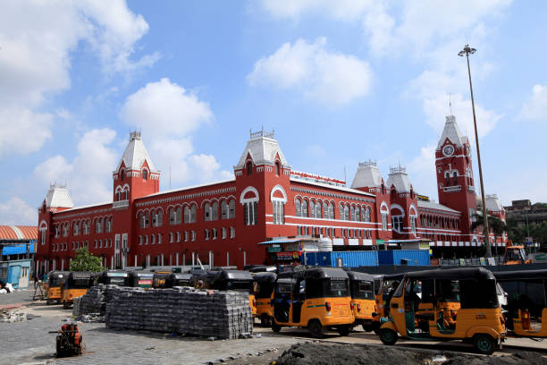
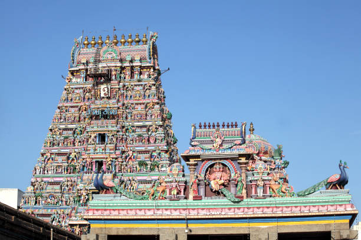
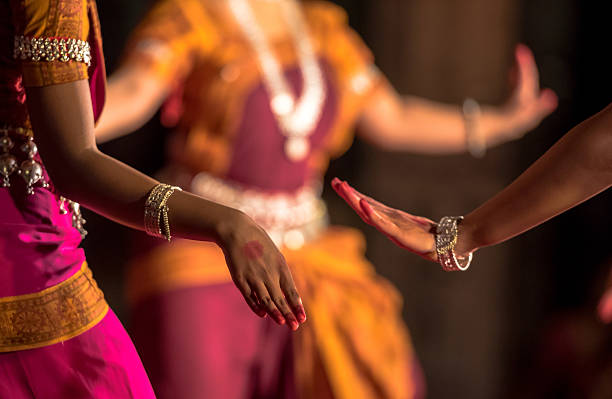

Chennai is a city where tradition and modern life walk side by side without arguing too much about it. Ancient temples stand calmly among busy tech offices, reminding everyone that time moves in layers here. The culture of Chennai is deeply rooted in classical art, music, and devotion. During the famous Margazhi season, the city becomes a stage for Carnatic music and Bharatanatyam, where artists and audiences celebrate centuries-old traditions with quiet passion. Food is another language of the city. From steaming idlis and crispy dosas to strong filter coffee served in steel tumblers, the flavors of Chennai carry the warmth of Tamil hospitality.